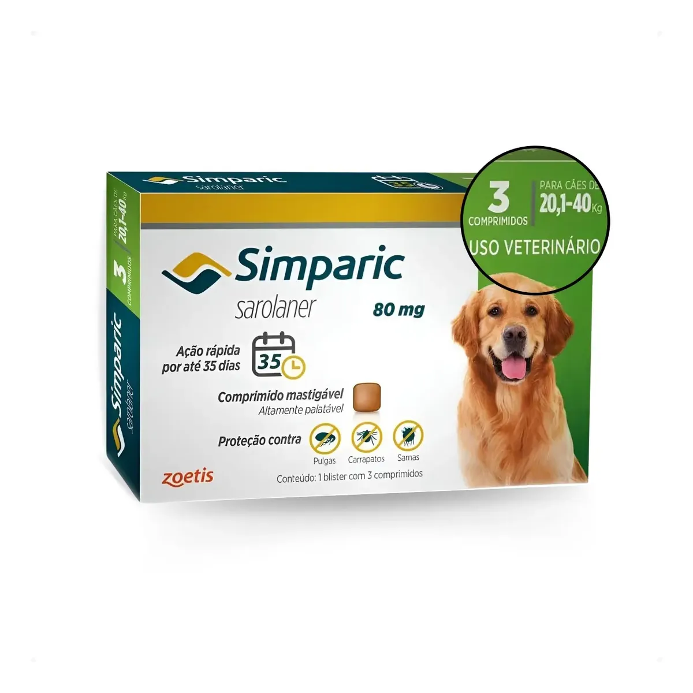
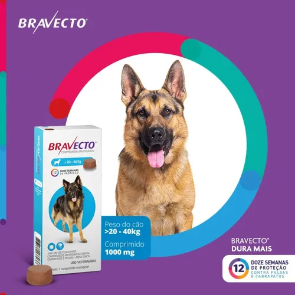
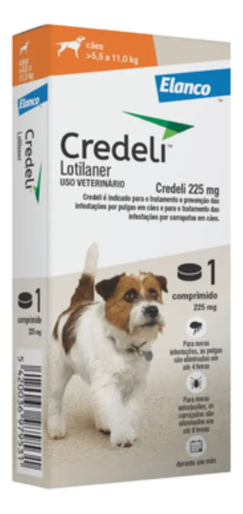
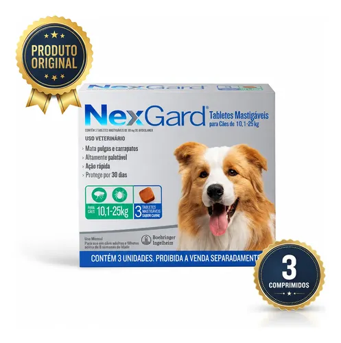
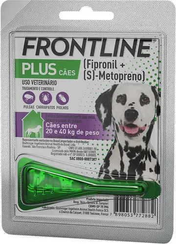
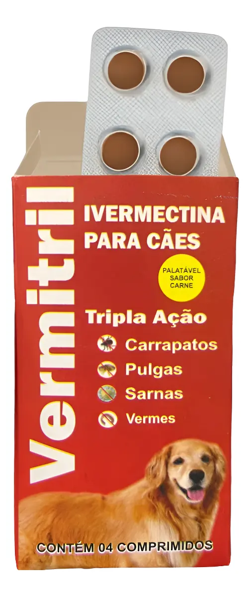

Qual é o melhor antipulgas para cachorro? Comparamos os 6 produtos antiparasitários mais vendidos no Mercado Livre em 2026 — 4 comprimidos orais à base de isoxazolina (Simparic, Bravecto, NexGard, Credeli), 1 pipeta tópica (Frontline Plus) e 1 comprimido de ivermectina com ação tripla (Vermitril) — para você decidir com base em princípio ativo, duração e faixa de peso, não em promoção.
Resposta direta: qual escolher
Não existe um "melhor" único — depende da sua prioridade:
- Menos aplicações por ano: Bravecto vence — até 12 semanas (3 meses) por comprimido, só 4 doses/ano.
- Cão pequeno (5,5-11kg): Credeli é a opção específica para essa faixa, proteção de até 30 dias.
- Cão médio a grande (20-40kg), orçamento menor: Frontline Plus (pipeta) é a opção mais barata por aplicação.
- Também combater vermes: Vermitril é o único com ação quádrupla (pulgas, carrapatos, sarna e vermes) — mas não use em raças com sensibilidade à ivermectina (veja o alerta abaixo).
- Os seis exigem conferência da faixa de peso correta em bula antes da compra.
| Produto | Tipo | Princípio ativo | Duração | Peso indicado | Preço | Nota ML |
|---|---|---|---|---|---|---|
| Bravecto Azul Celeste | Comprimido | Fluralaner | Até 12 semanas | 20-40kg | R$ 192,90 | 4,9★ |
| Simparic 80mg | Comprimido | Sarolaner | Até 35 dias | 20,1-40kg | R$ 221,25 | 4,9★ (2 mil+) |
| Credeli 225mg | Comprimido | Lotilaner | Até 30 dias | 5,5-11kg | R$ 47,90 | 4,9★ (2.705) |
| NexGard | Comprimido | Afoxolaner | 30 dias | 10,1-25kg | R$ 158,90 | 4,9★ |
| Frontline Plus | Pipeta | Fipronil + (S)-metopreno | ~30 dias | 20-40kg | R$ 59,94 | 4,7★ (4.829) |
| Vermitril | Comprimido | Ivermectina | 1 mês | 7-15kg | R$ 26,90 | 4,5★ (384) |
Preços e notas consultados no Mercado Livre em 29-30/09/2026 — sujeitos a alteração. Confira o valor atual na página do produto antes de comprar.
Nesta página

Comprimido mastigável à base de fluralaner, com a maior janela de proteção da lista: até 12 semanas por dose. Atinge eficácia máxima em até 8 horas contra pulgas e 12 horas contra carrapatos, conforme a página oficial da MSD Saúde Animal.
R$ 192,90 no Pix (5% off) · ⭐ 4,9 · avaliações no Mercado Livre · +100 mil vendidos
Preço, nota e avaliações consultados no Mercado Livre em 29/09/2026 e podem variar — confira os valores atuais na página do produto antes de comprar.
Comprimido mastigável à base de sarolaner. Começa a agir em até 3 horas após a administração e mantém eficácia por até 35 dias contra pulgas, carrapatos, e também auxilia no tratamento de sarna, segundo a bula oficial da Zoetis.
R$ 221,25 no Pix (5% off) · ⭐ 4,9 · mais de 2 mil avaliações · +30 mil vendidos
Preço, nota e avaliações consultados no Mercado Livre em 29/09/2026 e podem variar — confira os valores atuais na página do produto antes de comprar.

Comprimido mastigável à base de lotilaner, indicado especificamente para cães pequenos (5,5-11kg). Elimina pulgas em até 2 horas e carrapatos em até 4 horas, com proteção de até 30 dias, conforme a página oficial da Elanco. Não é resistente à água.
R$ 47,90 · ⭐ 4,9 · 2.705 avaliações no Mercado Livre
Preço, nota e avaliações consultados no Mercado Livre em 30/09/2026 e podem variar — confira os valores atuais na página do produto antes de comprar.

Comprimido mastigável à base de afoxolaner, dosagem mensal (2,5 mg/kg). Mata pulgas em até 8 horas e carrapatos em até 48 horas, com proteção total de 30 dias, de acordo com a bula oficial do fabricante.
R$ 158,90 no Pix (43% off) · ⭐ 4,9 · 7 avaliações no Mercado Livre · +100 vendidos
Preço, nota e avaliações consultados no Mercado Livre em 29/09/2026 e podem variar — confira os valores atuais na página do produto antes de comprar.

Pipeta tópica à base de fipronil + (S)-metopreno, aplicada na pele entre as escápulas. Age contra pulgas, carrapatos e piolhos, com proteção de até 30 dias, conforme a página oficial da marca (Boehringer Ingelheim). Pode ser usada em cadelas gestantes e lactantes, e em filhotes a partir de 8 semanas.
R$ 59,94 (a partir de R$ 54,38 com desconto) · ⭐ 4,7 · 4.829 avaliações no Mercado Livre · +10 mil vendidos
Preço, nota e avaliações consultados no Mercado Livre em 30/09/2026 e podem variar — confira os valores atuais na página do produto antes de comprar.

Comprimido palatável (sabor carne) à base de ivermectina, com ação contra pulgas, carrapatos, sarna e vermes — a única opção desta lista com efeito vermífugo combinado. Embalagem com 4 comprimidos, duração mínima de efeito de 1 mês.
R$ 26,90 (a partir de R$ 21,90 em kits) · ⭐ 4,5 · 384 avaliações no Mercado Livre · +1.000 vendidos
Preço, nota e avaliações consultados no Mercado Livre em 30/09/2026 e podem variar — confira os valores atuais na página do produto antes de comprar.
⚠️ Alerta de segurança — Vermitril (ivermectina): cães com a mutação do gene MDR1 não toleram bem a ivermectina e podem ter reações neurológicas graves (tremores, desorientação, coma). Essa mutação é comum em Collies, Pastores de Shetland, Old English Sheepdogs, Australian Shepherds e seus vira-latas/mistos. Se o seu cão é dessas raças ou linhagem, ou se você não sabe a genética dele, prefira um antipulgas à base de isoxazolina (Bravecto, Simparic, Credeli ou NexGard) ou peça um teste MDR1 ao veterinário antes de usar ivermectina.
Bravecto — Prós
Bravecto — Contras
Simparic — Prós
Simparic — Contras
Credeli — Prós
Credeli — Contras
NexGard — Prós
NexGard — Contras
Frontline Plus — Prós
Frontline Plus — Contras
Vermitril — Prós
Vermitril — Contras
Quatro dos seis produtos desta lista — Bravecto, Simparic, Credeli e NexGard — pertencem à classe das isoxazolinas e agem no sistema nervoso do parasita depois que ele faz o repasto sanguíneo, ou seja, o inseto/ácaro precisa picar o cão para entrar em contato com a substância. Picadas isoladas podem acontecer mesmo com o produto ativo, mas o parasita morre rapidamente antes de completar o ciclo de infestação.
O Frontline Plus usa um mecanismo diferente: fipronil e (S)-metopreno se espalham pela camada de gordura da pele e matam por contato, sem precisar da picada — por isso é sensível a banhos frequentes logo após a aplicação.
O Vermitril usa ivermectina, um antiparasitário de amplo espectro que age também contra vermes intestinais, mas com um perfil de segurança diferente — veja o alerta sobre a mutação MDR1 acima antes de escolher esta opção.
Comprimidos orais (Bravecto, Simparic, Credeli, NexGard, Vermitril) evitam o risco de o produto ser removido por banho ou lambido por outros pets da casa — uma vantagem real sobre pipetas tópicas. O Frontline (pipeta) tem duração competitiva e costuma ser mais barato por aplicação em cães de maior porte, mas exige cuidado para não molhar a área nos primeiros dias. Coleiras antiparasitárias (não incluídas nesta comparação) têm duração ainda mais longa, mas dependem de contato constante da pele com a coleira para funcionar bem.
A dosagem certa depende diretamente do peso do animal — aplicar um comprimido de faixa de peso errada pode ser ineficaz (dose baixa) ou arriscado (dose alta). Pese o cão antes de comprar, confira a faixa exata na embalagem, e para cães em fase de crescimento ou próximos do limite entre duas faixas, vale confirmar com um veterinário qual apresentação é mais segura.
Entre os seis desta lista, o Bravecto tem a proteção mais longa: até 12 semanas (3 meses) por comprimido. Simparic e Credeli protegem por até 35 e 30 dias respectivamente, NexGard e Vermitril por 30 dias, e o Frontline (pipeta) dura cerca de 30 dias por aplicação.
Comprimidos orais (Simparic, Bravecto, NexGard, Credeli, Vermitril) agem de dentro para fora e não saem com banho ou água, mas exigem que o cão aceite engolir. Pipetas como o Frontline são aplicadas na pele e formam uma camada oleosa de proteção, mais baratas por aplicação, mas perdem eficácia com banhos frequentes nos primeiros dias.
O Vermitril é à base de ivermectina, que pode causar reações neurológicas graves em cães com a mutação do gene MDR1 — comum em raças como Collie, Pastor de Shetland, Old English Sheepdog e seus mistos. Se o cão for dessas raças ou linhagem, prefira um dos antipulgas à base de isoxazolina (Simparic, Bravecto, NexGard ou Credeli) ou consulte o veterinário antes de usar.
Os quatro pertencem à classe das isoxazolinas e agem de forma parecida, mas com princípios ativos diferentes: sarolaner (Simparic), fluralaner (Bravecto), afoxolaner (NexGard) e lotilaner (Credeli). A principal diferença prática entre eles é a duração da proteção e a faixa de peso de cada apresentação.
O peso define a dosagem correta, mas não deve ser o único critério. Vale considerar também a frequência de aplicação que você consegue manter, se o cão aceita comprimido ou precisa de pipeta, e se há histórico de sensibilidade a algum princípio ativo — nesse caso, consulte um veterinário antes de trocar de produto.
Compre apenas de vendedores oficiais ou com boa reputação e avaliações consistentes, verificando lacre e validade na chegada. Na dúvida sobre autenticidade, prefira farmácias veterinárias ou petshops com CRMV responsável.
Pulgas de cachorro podem picar humanos, mas não conseguem completar o ciclo de vida na pele humana — elas preferem o pelo do animal. Ainda assim, uma infestação no cão costuma significar que o ambiente (tapetes, sofás, frestas do piso) também está contaminado com ovos e larvas, então tratar só o pet não resolve o problema por completo.
Além do antipulgas no cão, é preciso lavar roupas de cama do pet em água quente, aspirar tapetes, sofás e frestas com frequência (descartando o saco do aspirador em seguida) e, em infestações grandes, aplicar um inseticida próprio para ambientes indicado por um profissional. O ciclo da pulga tem fases de ovo e larva que sobrevivem no ambiente por semanas, então o tratamento do cão sozinho não elimina o problema se a casa não for tratada junto.
Cada produto tem idade mínima e peso mínimo definidos em bula, que variam entre os seis e mudam conforme a apresentação. Antes de aplicar em filhotes, confira a idade e o peso mínimo indicados na embalagem específica e, na dúvida, confirme com um veterinário — dose errada em filhote é um dos erros mais comuns na hora de escolher antipulgas.
Não existe "o melhor" antipulgas em termos absolutos — existe o mais adequado ao porte, à rotina e à genética do seu cão. Para quem prioriza menos aplicações por ano, o Bravecto vence pela duração de 12 semanas. Para cães pequenos, o Credeli tem o melhor custo-benefício na faixa de 5,5-11kg. Quem busca uma opção tópica mais barata para cães maiores encontra no Frontline Plus uma alternativa sólida. Já o Vermitril só vale a pena se o cão não tiver risco de sensibilidade à ivermectina — confirme a raça/linhagem antes de comprar. Em qualquer caso, confirme a dosagem certa pelo peso do cão e, na dúvida, converse com o veterinário antes de trocar de produto.
Escrito pela Equipe Smart Pet Gadgets, redação especializada em comparativos de produtos pet no mercado brasileiro. Informações de composição e posologia consultadas em bulas e páginas oficiais dos fabricantes (Zoetis, MSD Saúde Animal, Boehringer Ingelheim, Elanco) — este conteúdo não substitui orientação veterinária. Veja nossa política editorial.
🐾 Confira preços e disponibilidade atual no Mercado Livre.
Links de afiliado: podemos receber uma comissão por compras feitas através destes links, sem custo adicional para você.
Nildo Alves — curadoria de produtos pet no Smart Pet Gadgets. Testa e pesquisa produtos para cães e gatos, cruzando especificações de fabricante com boas práticas veterinárias e dados de mercado.
Sobre o Smart Pet Gadgets · Contato · Política editorial e de afiliados